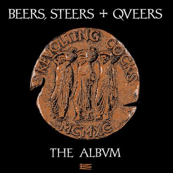

Hacer una lista es una labor tan complicada como desagradecida. Tan pronto te das cuenta de que llevas dos horas decidiéndote entre tal o cual grupo, como una vez publicada recibes críticas con el ya consabido ‘te has dejado tal, yo hubiera metido este otro’. Todo parecen ser inconvenientes. En el caso de la lista que nos ocupa, es peor todavía. Hacer una lista de 30 discos de Rock/Metal Industrial significa que hay que ser un frikazo de narices, un estigma social que a los cuatro matados que nos sigue gustando el género nos persigue desde hace años. Encima el lector poco habituado a este tipo de música va a pensar ‘¿Treinta discos? ¡Pero si eso debe ser prácticamente todo lo publicado!’, y casi, casi estaría en lo cierto.
¿Y por qué Rock/Metal Industrial? Cada vez que un género sufre una etapa revival o está en un momento especialmente dulce, las listas se vuelven una moneda de cambio habitual en los medios de comunicación. No es así para la lista que nos ocupa. Al Rock/Metal Industrial ni está ni se le espera, pero como soy muy cabezón me niego a creer que no exista aún gente que pueda amar toda esta retahila de discos como yo los amo. Bueno amarlos no, pero quizá apreciarlos un poco más.
Estos 30 elementos listados no son únicamente lo más destacable de un género un tanto difuso y caótico, sino que además forman una fotografía fija de treinta años de historia de la cara B de la música. El orden es prácticamente lo de menos.
30. Rammstein – Mutter (2001)
Los puristas del género les achacarán su poca originalidad o que viven a base de dos riffs de Ministry, pero actualmente Rammstein es el único grupo de rock industrial (Nine Inch Nails aparte) capaz de llegar a un público amplio. Hacerlo además con una propuesta como la suya, tan efectista como limitada, es de un mérito encomiable. Con Mutter llegaron a su tope facturando un disco dónde todas sus virtudes sumadas superan cualquier defecto que se les pueda echar en cara, además, la primera mitad es una colección de singles muy buena.
https://www.youtube.com/watch?v=KnEcyuk1JU0
29. Laibach – Jesus Christ Superstars (1996)
Laibach son uno de esos grupos que nunca sabes por dónde te van a salir. Su querencia a hacer versiones totalmente retorcidas y enfermizas, y su camaleónica habilidad para pisar casi cualquier género, siempre con su sello personal, tuvo su incursión en el Metal Industrial. Jesus Christ Superstars es todo lo que podríamos imaginar que implica por su nombre (sí, hay ESA versión, obviamente). Un disco dónde los eslovenos van pasadísimos de rosca, todo funciona a base de riffs deliberadamente toscos, y la base rítmica es más rudimentaria que el mecanismo de un botijo. Puro Laibach al fin y al cabo.
28. Revolting Cocks – Beers, Steers + Queers (1990)

No diré que Revolting Cocks son una banda capital pese a que su debut (Big Sexy Land, 1986) es el primer disco de lo que podríamos calificar como Rock Industrial. No lo diré porque musicalmente no son lo más brillante del género, lo que pasa es que Revolting Cocks, aparte de un nombre genial, siempre fueron un grupo que nunca se tomó en serio. Y precisamente en un género tan poco dado al sarcasmo y al humor como este, la importancia de las Pollas Revoltosas (no sé que es mejor, si el original o la traducción) adquiere su verdadera dimensión. Beers, Steers + Queers es con toda probabilidad el disco más cínico de la historia del género.
27. Skinny Puppy – Rabies (1989)
La publicación de Rabies casi acaba con la carrera de Skinny Puppy. Los padres de la electrónica industrial se aliaron para la ocasión con Al Jourgensen para producirles el disco. El nuevo sonido, mucho más cercano a Ministry (cómo no) que a lo que venían haciendo hasta entonces, no gustó nada ni a la prensa ni a los fans del grupo. Siendo sinceros, no es para tanto: Rabies tiene muy buenas ideas lastradas por un desarollo que no termina de encontrar su sitio. A veces es lento y demasiado pesado, pero cosas de la vida, con el tiempo parece haber encontrado su sitio en el imaginario particular de la banda.
26. Psychotica – Pandemic (1998)
Todo género tiene sus bandas de culto, desconocidas y malditas. Y Psychotica tienen todos los ingredientes para ser considerados la banda maldita del rock industrial. Pandemic es un disco que no llegó a salir publicado cuando debía, cuando todo parecía indicar que alrededor de la escultural y espigada figura de Pat Briggs se estaba gestando algo grande. La mezcolanza de rock industrial y elementos glam de Psychotica merecía mucha más suerte de la que tuvo, y gracias a internet se ha podido hacer justicia (en parte) con un grupo cuya personalidad y sonido brillan con luz propia.
25. 16Volt – FullBlackHabit (2007)
16Volt es una banda que inició su camino a caballo entre la primera y la segunda oleada de grupos de rock industrial. Pero, y como suele pasar en el mundo de la música, nunca tuvieron la suerte de cara y se quedaron a las puertas del cielo en un par de ocasiones. Fullblackhabit era su retorno tras varios años de litigios discográficos y un parón obligado, pero escuchándolo cualquiera diría eso. Eric Powell, fundador y único miembro fijo de la banda, se sacó de la chistera un disco variado que no duda en empaparse del rock alternativo de los 90 y del trip-hop pero sobre todo, repleto de buenos temas de principio a fin.
24. Shotgun Messiah – Violent New Breed (1993)
Antes de que Tim Skold fuera guitarrista de KMFDM o Marilyn Manson, tuvo este proyecto que en un principio estaba asociado a la escena Sleazy/Glam. La llegada de los 90 supuso un golpe mortal para la banda, que se fue desintegrando paulatinamente hasta que únicamente quedaron dos miembros: Tim y Harry K. Cody. ¿Y que hicieron? Pues publicar este Violent New Breed, un disco que suena como si los Guns’n Roses de aquellos años se hubieran hartado de escuchar a Ministry y a los NIN de Broken. Obviamente, el grupo se fue a la mierda del todo tras su publicación, pero la verdad es que es un disco interesante, bastante original e innovador, y que vale mucho la pena.
23. Punish Yourself – Gore Baby Gore! (2006)
Que las listas dependen de un criterio subjetivo es algo que damos por sentado, pero con Punish Yourself reconozco que no podría ser imparcial ni con una pistola apretada contra la sien. Los franceses fueron de las últimas bandas con personalidad en un género cuya decadencia estaba ya bien encaminada cuando publicaron Gore Baby Gore!. Que no os asuste lo estridente de la producción ni las voces, y tampoco esa sensación de música más hecha por joder que para escuchar tranquilo en casa. Ese envoltorio esconde una mezcla imposible entre la ciencia ficción, el spaghetti western y las drogas sintéticas. Como si Atari Teenage Riot y The Stooges hubieran hecho una jam conjunta un día de resaca.
22. Misery Loves Co. – Misery Loves Co. (1995)
Los suecos Misery Loves Co. quedaron un poco a la sombra del éxito de Fear Factory y su Demanufacture. Su Metal Industrial, que a veces parecía tomar prestadas influencias de los Alice In Chains más pesados, destacaba por lo compacto y preciso de sus temas. Probablemente, por no decir que con toda seguridad, sus discos posteriores a este homónimo debut están más afinados, pero ese clásico instantáneo llamado Kiss Your Boots equilibra la balanza en este aspecto.
21. Die Krupps – II: The Final Option (1993)
Los padres putativos de Rammstein, además de compartir país de origen, fueron uno de los grupos pioneros en Europa del EBM más agresivo y bailable. Hasta que un día se rallaron mucho con Metallica y decidieron incorporar las guitarras a su sonido. Ese giro les permitió destacar también como una sólida y contundente banda de Metal Industrial que anticipaba el camino no sólo a sus compatriotas, sino a muchas otras bandas. Algunas probablemente incluso sin saberlo. II: The Final Option es, de lejos, su mejor disco de esta etapa.
Apoyános